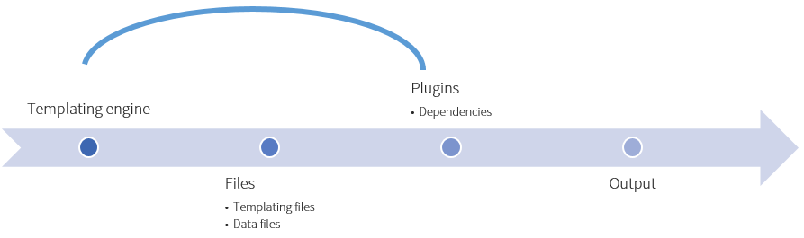

This topic gives a brief introduction about the contents of the package, not the files but rather the various components which are in the package.
| Component | Description |
|---|---|
| OfficeUI Templating engine | The topics contained in this section explore the functionalities of the templating engine. |
| OfficeUI Components | The topics contained in this section explore the various controls. |
The templating engine is the core of the OfficeUI functionality. It enables us to render complex HTML element without needing to write difficult jQuery or JavaScript functions that append some HTML to already existing elements. The templating engine allows us to create HTML files from special templating files (.tmpl) in order to generate complex HTML elements.
The following steps represents the logic flow of the templating engine.

The image above gives a visual representation of the OfficeUI templating engine.
Another component of the OfficeUI framework are the components which comes with the OfficeUI framework.
The following components come packed with the OfficeUI framework by default.
| Component | Description |
|---|---|
| Ribbon | The ribbon exposes a command bar at the top of your page which exposes the most common features. |